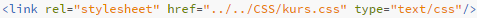
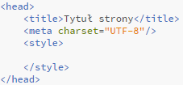
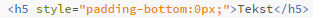

Czym są arkusze stylów?
Arkusze stylów to zaimplementowane w kodzie CSS instrukcje edycji wyglądu tego, co znajduje się na naszej stronie. Możliowści konfiguracji poszeczególnych elementów w kodzie CSS3 są nieporówynywalnie lepsze od tych, które jak na razie oferuje nam język HTML5. O wiele bardziej dokładne i precyzyjne, pozwalają na znaczną poprawę wizualnej strony witryny. Dla tego też do edycji wyglądu HTML5 zaleca się używanie wyłącznie jego, chyba że taka możliwość nie istnieje, lub też użycie samego HTML5 jest akurat wygodniejsze. Są to jednak bardzo sporadyczne wypadki.
Arkusze stylów określają więc w jaki sposób poszczególne znaczniki na stronie będą wykożystywane.
Reguła stylu
Kożystanie z arkusza stylów odbywa się poprzez użycie zawartych w nim reguł stylów. To one formatują określone elementy na strone w odpowiedni sposób. Każda reguła stylu składa się z:
- selektora - określającego odwołanie do konkretnego obiektu HTML5
- deklaracji stylu - zawierającej się w "wąsach" konktetne informacje o formatowaniu:
- właściwości - to konkretna nazwa typu formatowania
- wartości - występująca po dwukropku i zakończona średnikiem warość dla danego typu fomatowania
Sposoby umieszczania arkuszy stylów na stronie i ich hierarchia
Istnieją trzy sposoby umieszczania (podpinania) arkuszy stylów na stronie. Omówmy każdy z nich z osobna:
Zwenętrzny arkusz stylów
Służy do podpinania arkusza, który znajduje się poza obrębem naszej strony. Jest osobnym dokumentem o rozszerzeniu .css.
Aby dokonać podpięcia używamy już wcześniej poznanego w kursie języka HMTL5 znacznika <link rel="..." href="..." type="..." ∕>.
Wewnętrzny arkusz stylów
Wewnętrzny arkusz stylów to umieszczenie w znacziku <head><∕head> kolejnego zancznika <style><∕style> i w nim reguł stylów. Ma on wyższą hiererchię ważnosći niż zwenętrzny arkusz.
Lokalny arkusz stylów
Lokalny arkusz stylów ma najwyższą hirerchię ze wszystkich trzech sposobów umieszczania formatowania CSS3 na stronie. Zostanie wykonany w kolejności jako pierwszy.
Stosuje się go przy konkretynym znaczniku HTML5 jako atrybut style="..."
Ogólna hierarchia elementów na stronie
Innaczej mówiąc jes to główna cecha języka CSS, który sam po rozwinięciu swojej nawzy sugeruje "kaskadowe arkusze stylów". Elementy o najwyższej hierarchi są wykonywane przed tymi, które leżą w niej niżej. Zostają nadpisywane na niższy punkt w liście.
- Styl lokalny
- Rozciąganie stylu <span>
- Wydzielone bloki <div>
- Wewnętrzny arkusz stylów
- Zewnętrzny arkusz stylów
- Import arkusza stylów
- Domyślne ustawienia przeglądarki